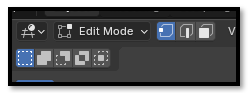
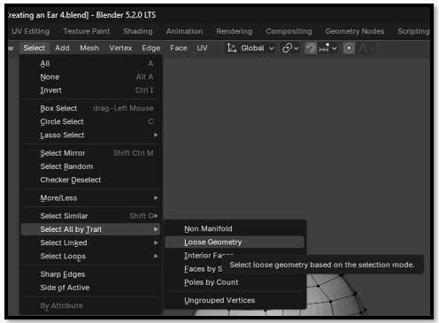
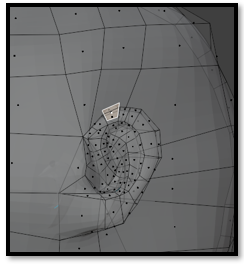
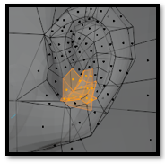
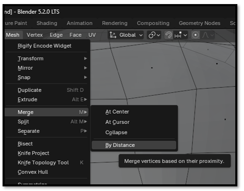
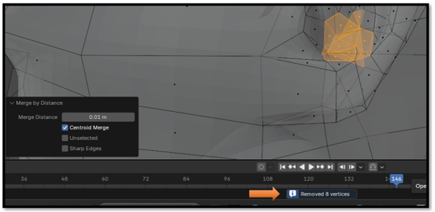

~15 Checking for Loose Geometry~
12/14/2026
Test One -Loose Geometry
Edit Mode

Deselect everything, then go to Select → Select All by Trait → Loose Geometry. Blender will select any geometry that is not connected to the main mesh.

Aha! Blender found a disconnected face in the ear.

So, delete that wayward face—it does not belong on our model.
Test Two- Extra Vertices
- Stay in Edit Mode.
- Select just a small patch of vertices in a trouble spot—enough to cover the bumpy/deforming region,

- Press M, or go to the Mesh menu Merge → Merge by Distance.
WATCH IT: Don't use a large Merge Distance just to make Blender remove something. If the distance is too high, Blender can merge nearby vertices that were supposed to remain separate.

- Watch the little message Blender gives us afterward. It should say something like “Removed 0 vertices” or “Removed X vertices.”

If it says 0, excellent—we've ruled out doubles within the Merge Distance we tested.
If it says 1, 2, 3... then AHA! We may have caught some stowaways.